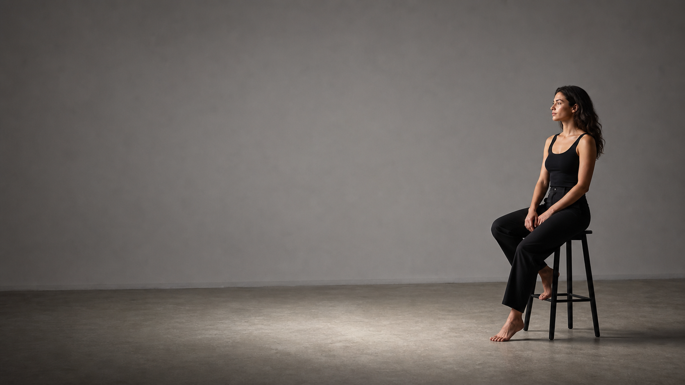

Inverse-square flash exposure
Distance doubles. Light becomes one quarter.
Exposure at the subject is proportional to flash power divided by distance squared. Add two stops of power for each doubling of distance to hold the same exposure.
subject light
=
flash power
/
distance2
Distance ratio